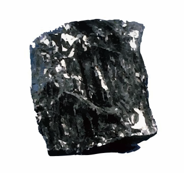

気体の燃焼
可燃物をその物理的状態（気体・液体・固体）で分類すると、それぞれに応じたメカニズムで燃焼が進行します。可燃性ガスは、空気中である一定の濃度範囲内に混合されなければ燃焼を起こしません。この範囲を燃焼範囲と呼びます。
燃焼範囲内のガス混合気を得るには、燃焼前に可燃性ガスと空気をあらかじめ混合する方法と、燃焼時に可燃性ガスを周囲の空気に拡散させて混合させる方法があります。前者を予混合燃焼、後者を拡散燃焼と呼びます。
予混合燃焼では、炎が素早く伝播して一気に燃焼が完了します。ただし、密閉空間では急激な温度・圧力上昇により爆発を引き起こす危険があります。一方、拡散燃焼は可燃性ガスが連続供給される限り、持続的に炎を維持して燃焼します。
液体の燃焼
アルコールやガソリンなどの可燃性液体は、液面から蒸発した可燃性ガスが着火して炎を発生させることで燃焼します。この燃焼様式を蒸発燃焼といいます。
そのため、可燃性液体を取り扱う際には、蒸気の漏えいや滞留を防ぐなど、蒸気管理に十分注意を払う必要があります。
固体の燃焼
固体状態の可燃物は、表面燃焼・分解燃焼・蒸発燃焼の3種類に分類されます。
表面燃焼は、可燃性固体が熱分解や蒸発を伴わず、そのままの形で空気と接触した表面部分が直接燃える現象です。木炭、コークス、金属粉などの燃焼が該当します。

高光沢・非多孔質の硬質炭

灰白色・多孔質の製鋼用炭
※ アントラサイト：含炭量が約90％以上の高ランク硬質炭で、光沢のある黒色をしています。密度が高く、無煙燃焼しやすいため、着火後は安定した火力を保ちます。
※ コークス：石炭を約1,000～1,100℃で乾留し、揮発分を除去した灰黒色・金属光沢のある多孔質固体。炭素含有量は約85～90％。着火温度は高いものの、一度着火すると無炎燃焼に移行し、持続的に高温を保って強い火力を発揮します。
蒸発燃焼は、可燃性固体を加熱して熱分解させずに気化（または昇華）した蒸気が燃焼する現象です。硫黄、ナフタリン（ナフタレン）、固形アルコールなどがこの例に該当します。
分解燃焼は、可燃性固体が加熱で熱分解し、発生した可燃性ガスが燃焼する現象です。木材、石炭、紙、プラスチック類などが該当します。
自己燃焼は、分解燃焼の一種で、可燃性固体が内部に保持する酸素により自発的に燃焼が進行する現象です。加熱や衝撃、摩擦などが引き金となって爆発的に燃焼するため、内部燃焼とも呼ばれます。ニトロセルロースやセルロイドなど、多くの第5類危険物が該当します。
ニトロセルロースは、セルロース（構成単位の組成式：(C₆H₁₀O₅)ₙ）に硝酸エステル基（-NO2）が導入された化合物です。硝化度が高いものは火薬として、低いものはフィルムなどの用途に利用されます。
クイズ①
燃焼の際に可燃性ガスを拡散させ空気を混合させる方法は次のどれですか？
クイズ②
分解燃焼に該当しないものはどれですか？
次は燃焼の難易に進みます。